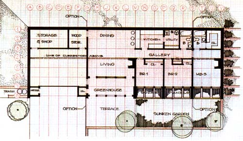
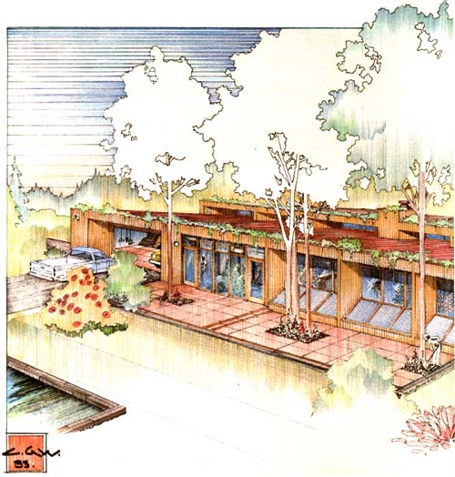
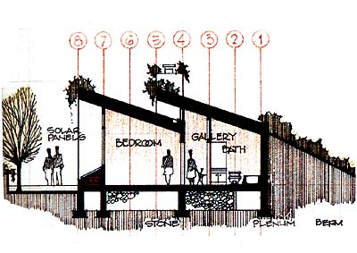

A sound design, combined with a simple and commonsense approach, is the key to developing a successful structure.
In the past, MOTHER has featured a number of solar houses built to combine function with economy and aesthetics. This time around, we're going to break with tradition and profile an efficient design rather than a finished dwelling . . . in the hope that this "paper image" will stimulate as much interest in alternative architecture as would any completed structure.
It all started when solar designer Charles G. Woods-with his associate, architect Albert Sincavage-approached MOTHER's editors with the idea of offering our readers an original plan for a sophisticated but sensibly designed residence. We gave Woods a green light for his proposal, but with two stipulations: The home had to be small to acknowledge the current trend toward downsized housing . . . and it should, through the judicious use of inexpensive building materials, have a dollar-per-square-foot figure near-or preferably lower than-the national norm. We also suggested that it would be nice if the dwelling incorporated some innovative (yet practical) features, and could be owner-built without a lot of difficulty.
What Charles came up with was a functional meld of proven energy-conserving construction techniques all wrapped up in an attractive and-best of all-highly flexible design package. "I understood the desire for a compact arrangement," Woods stated, "and I knew that, since MOTHER people are doers, they'd be concerned with keeping building methods simple and costs down. However, I was also aware that not all families have similar needs . . . and felt it would be insensitive to limit those excited about the home's features to a fixed floor plan that they might not be able to live with."
So, to make the package attractive to everyone, the award-winning Pennsylvania designer-who apprenticed under a direct student of Frank Lloyd Wright-set up the building using a series of 4"-wide modular units. In other words, the single-level, 2,460-square-foot house illustrated on these pages is a bit deceiving, because it's actually an expanded version of a central "core structure" that takes up only 1,350 square feet. An individual home can be easily broadened or condensed from the basic nucleus (indicated in red on the floor plan). It could even be shortened from front to back!
A look at the renderings reveals that Woods relied on two tried and true techniques to conserve energy: passive solar insolation and earth berming. But what may not be so obvious is that he incorporated a number of other features in the design to further that end. Its 12" all-weather outside walls are made from bentonite- or butyl-sheathed wood, and are a lot easier for an owner-builder to construct than conventional concrete ones . . . though poured or block walls can be used if desired. (The framing is also thick enough to accept super levels of insulation.) The home's two optional fireplaces can provide supplemental heat if necessary. And while the 1-1/2"-deep plywood roof joists aren't stout enough to support an earth load (such a "top" would have added considerable expense), the roof's supports do allow room for 18" of fiberglass batting . . . and carry fascia planters for the seasonal vines that protect the transoms and clerestories from the summer sun's rays. (Cool tubes can also be used to assist in warm-weather ventilation.)
Furthermore, the designer opted to Combine rock storage with what he describes as a sort of "envelope in function". He explains, "Collected heat that rises is ducted with the help of a small fan-to a 4"-deep insulated plenum filled with stone mass, lying beneath the floor. When needed, this thermal storehouse supplies the living area with warmth through a simple forced-air system."
Woods's detailed calculations show that, in an environment with 6,300 heating degree days, the house should require almost no supplemental warmth. In fact, if a builder added an air-to-air heat exchanger and insulating drapes, backup heaters would be needed only in the most extreme cold weather. Fortunately, the cost for all of this is reasonable. The estimates range from about $25 per square foot for the shell to somewhere in the neighborhood of $45 per square foot for the completed home. And, of course, the more contracting you do yourself, the more you can reduce these figures!
EDITORS NOTE: A complete six page set of high-quality working drawings for this house including a perspective, floor and foundation plans, structural sections, elevations, mechanical system details, general specifications and notes, and a materials list-is available from Charles G. Woods and Associates, Natural Architecture, Dept. TMEN, RD 3, Box 538, Honesdale, Pennsylvania 18431. The cost of one set is $115 postpaid, with each additional set priced at $15 if ordered at the time of purchase. (Plan purchasers are also entitled to two hours of telephone consultation with Woods-at 717/253-5452-if they initiate the call.)
And 35 earlier Woods designs (not including this one) are depicted in his book, Natural Architecture . . . available for $15 postpaid from Earth Shelter Living magazine, Attention: Bill Baker, Dept. TMEN, 110 South Greeley Street, Stillwater, Minnesota 55082.
|
 |
 |
 |